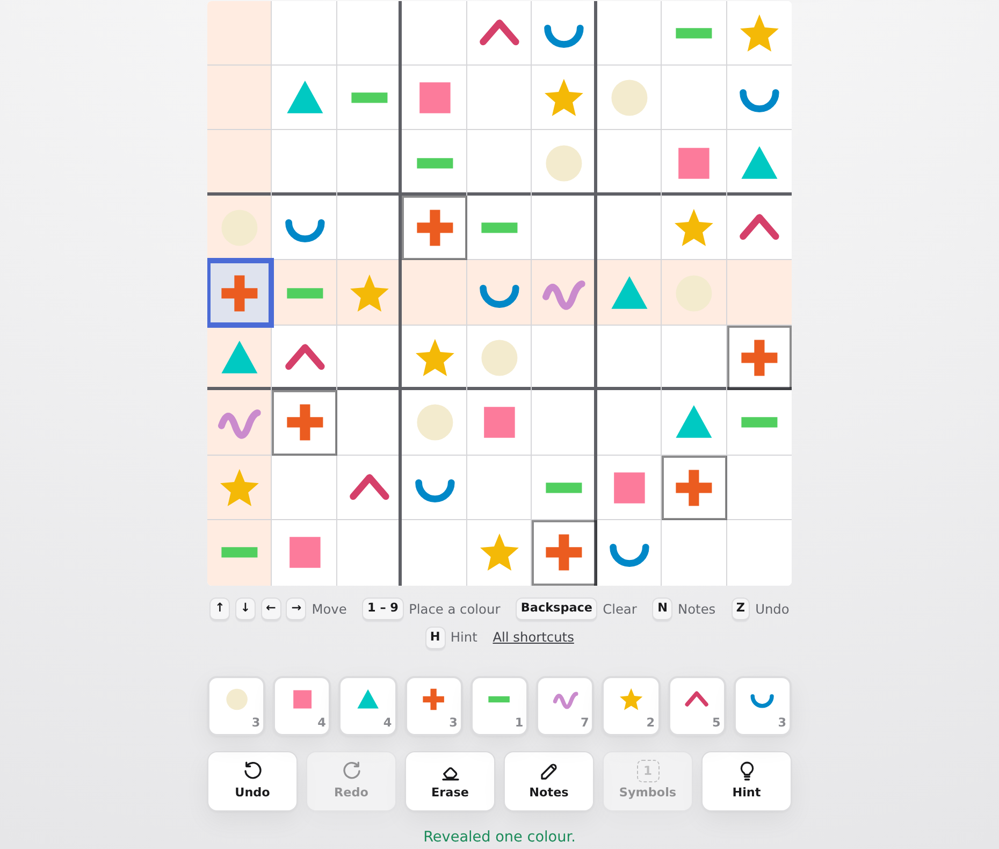
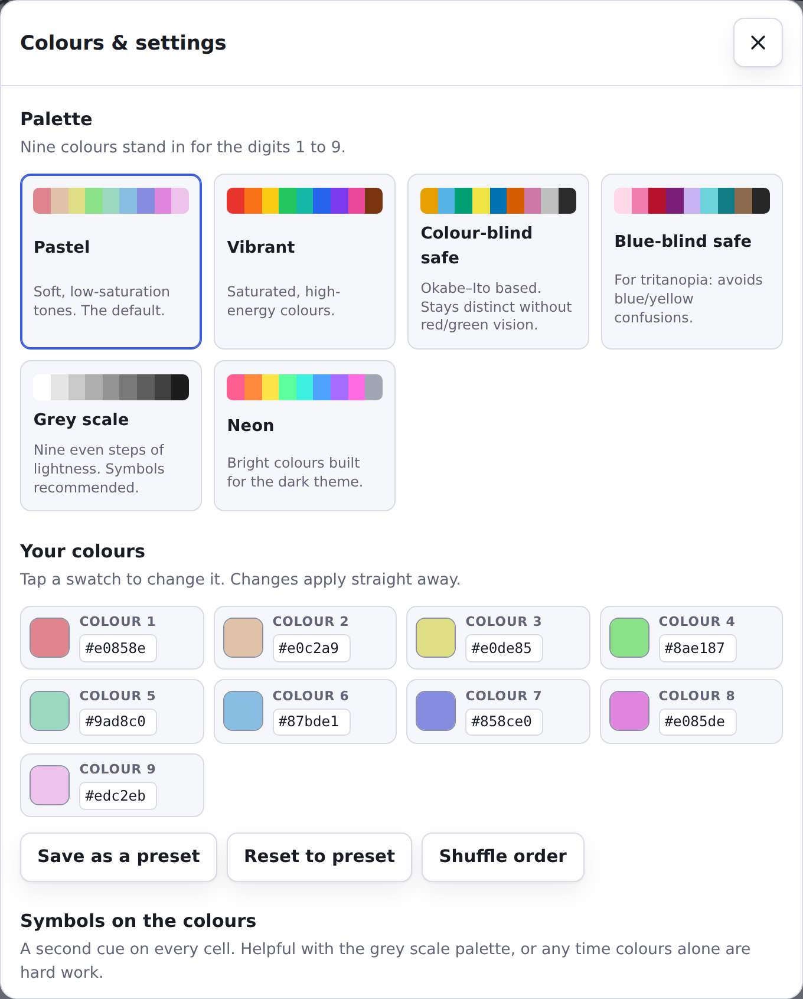
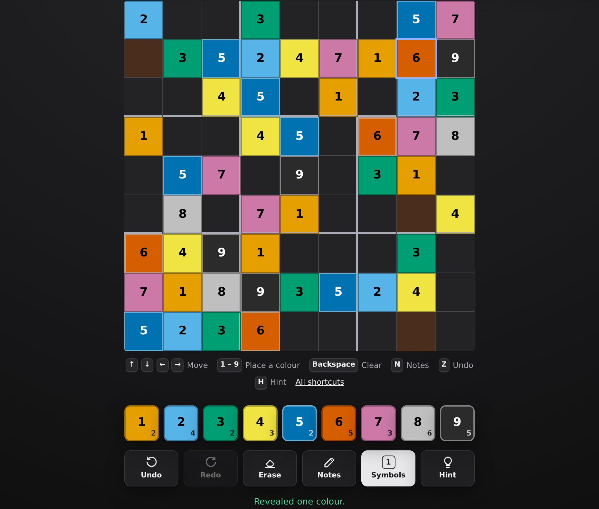

Shapes as well as colours
Every number has a post-it shape — circle, square, triangle, plus, minus, wave, star, chevron, smile. The board can be drawn with shapes instead of fills, or with shapes alone and colour off entirely.
Same rules, no digits: each colour goes once per row, once per column and once per box. It ships with eight palettes — a colour-blind safe one and a grey scale among them — an editor for picking your own nine, and the option of playing by shape instead.
Play the board below Open the full game
This is not a picture of the game. The board below is the game's own board, running the same generator and the same renderer as the app — the only difference is that nothing here is saved, so the palette you try out is forgotten when you leave. Pick a colour, then tap the empty cells it belongs in; it stays armed, so you can sweep the board with one colour. Tapping a filled cell puts it down again.
Choose a colour from the palette, then an empty cell. The arrow keys move, 1 to 9 place a colour and Backspace clears, once the board has focus.
Nine colours stand in for the digits 1 to 9. The board recolours as you pick.
Flood the cell with its colour, or draw the post-it shape that belongs to it. Turning colour off leaves the shape to carry the whole value.
A second cue on every cell, at 4.5:1 contrast or better against its swatch.
The full game has the rest: your own nine colours, saved presets, pencil marks, rebindable keys, a timer and your best times.
Colour alone is not enough for everyone, so the palette is only one of the cues. Each of these is a switch in the settings sheet, and three of them are on the board above.
Every number has a post-it shape — circle, square, triangle, plus, minus, wave, star, chevron, smile. The board can be drawn with shapes instead of fills, or with shapes alone and colour off entirely.
Numbers or letters drawn over every colour, one key press away. The ink is picked per swatch so it always clears 4.5:1 against the colour underneath.
Custom palettes are checked in CIE L*a*b*. If two swatches land within ΔE 18 the settings sheet names the pair and offers to switch symbols on.
A clash gets a red ring and a diagonal hatch in the cell's own ink, so the warning never depends on seeing red. "Tell me when it's wrong" compares against the solution, catching a wrong colour that clashes with nothing.
The board follows the ARIA grid pattern: one tab stop, a roving tabindex,
selection following focus, and a spoken label per cell that names the number — never
the colour, which would tell a screen-reader user nothing.
Pick a shortcut in the settings sheet and press the key you want it on. Any key will do, the digits and Tab included.
Everything the demo leaves out, in three pictures.



These work on the board above too, once it has focus. In the full game every one of them can be moved to a different key.
| 1–9 | Place that colour |
| Arrow keys | Move one cell |
| [ ] | Previous or next empty cell |
| Backspace | Clear the cell |
| Z Y | Undo, redo |
| H | Reveal one colour |
| T | Symbols on or off |
| Esc | Put the current colour down |
Generated in the tab, always with exactly one solution. Difficulty is not a clue count: each candidate is run through a solver that only knows human techniques, and kept when the hardest one it needs matches the band.
| Level | Clues | Hardest technique needed |
|---|---|---|
| Easy | ~42 | naked singles |
| Medium | ~34 | hidden singles |
| Hard | ~29 | locked candidates |
| Expert | ~25 | chains and guessing |
Clone it and serve the directory, or point GitHub Pages at the branch root. There is no build, no bundler and nothing to install — the page you are reading loads the same modules the game does.